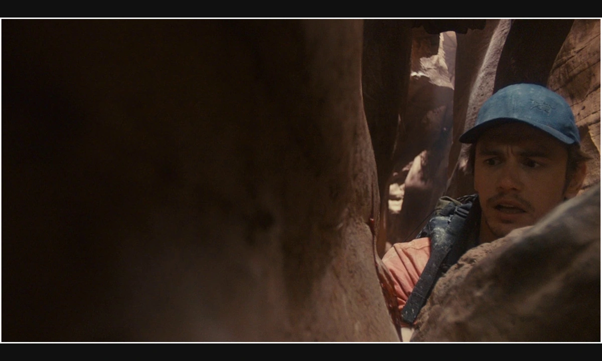
先检查，再改变。
Getting unstuck

第二步：打破常规，换一种想法。
假设剧本写着：「摔跤手被压在地上，已经无力翻盘。」
尽可能多地用形容词描述这一刻：「我们的主角输掉了比赛。他原本被看好能赢，对手却把他翻倒、压制；他的世界一下颠倒了。他感到虚弱、受制，仿佛被失败碾碎。前面的铺垫都让他像一个强有力的竞争者，可这一瞬间，局面发生了惊人的逆转。」
从这段描述中挑出关键形容词与动词，再逐个把它们按字面变成画面：
剧本：「警长骑着他可靠的马进了镇子。镇民怀疑他的能力，交头接耳地议论他。」
先选两个关键名词来建立词库：1. 警长；2. 闲话。分成两列，每列写下你能联想到的词。没有错误答案。
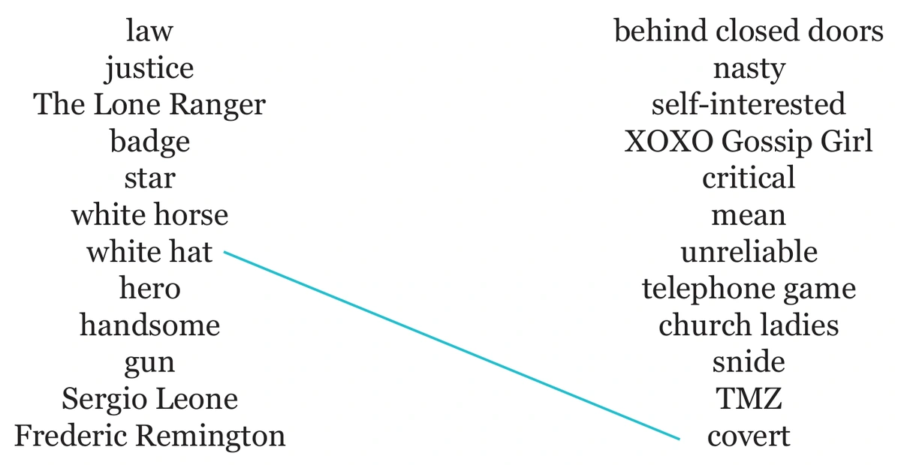
现在用这两个词来构图。要突出警长的白帽子，能不能把暗的东西放在后面？甚至把整幅画面都放进阴影，只留下警长是亮的？
要表现闲话的隐蔽，能不能把说闲话的人藏在暗处？降低他们与阴影之间的反差，让他们融进去；或者把他们放在画面里不显眼的位置？
再随机抽一组：1. 英俊；2. 刻薄。
能不能给警长漂亮的光线与轮廓，突出他的相貌和体格？能不能把说闲话的镇民拍得丑一些，表达闲话的刻薄？合起来，或许就近拍说闲话者的脸，再给警长用美化人物的光。
你已经把普通全景改成了更独特的构图。继续把更多词连接起来、反复尝试。
关键是随机选词，再逼自己去创造。只挑自己喜欢的词，就无法让大脑进入新的、不舒服的思路。
随机选词工具：randomwordgenerator.com
先用抽象的视觉方式，重新接近你的构图。随手在画框里画几个你觉得好看的形状。
就像看云时看出一只兔子，让潜意识带路，让思绪自由游走。每个形状都可能成为场景里能存在的东西：一个人物、一栋建筑或一棵树。
剧本：「小偷进来，从夜间守卫身边悄悄溜过。」
像演默片或动画一样，用自己的身体演出来。注意身体的感觉：偷溜时是不是缩成一团？毫不知情的守卫是不是放松、随意？
再把身体的感觉变成构图：画面可以像守卫一样平衡、平静，而小偷在背景里无人察觉地溜过；也可以站在小偷的视角，做一个挤紧、阴暗、偷偷绕过守卫的镜头。
用构图体现人物的观看方式。剧本：「她迟到了，只能到教室后排听课。」
先问：这场戏里她是什么感觉？想通人物的情绪，再用她的眼睛看世界。她是否因为迟到时被关注而不自在？是否根本不在意，还很高兴坐到后排？还是外表装酷、心里焦虑？
先进入人物的立场，再用构图把它变成看得见的东西。
两次错误不一定变成正确，那三次呢？不满意一个镜头时，挑战自己再做几个「糟糕」决定。有时错上加错，反而会打开出路。
剧本：「她哭着把牵引绳从狗的项圈上取下，知道再也见不到心爱的狗了。」你最初可能想到一个中景，同时拍她的表情和松开牵引绳的动作。可是这么痛的一刻，怎样才能让人记住？
假设你唯一确定的是：想看见她脸上的一滴泪。那就试试最不适合它的选择：
问题很多，但也许能成立：剪影里仍能通过肢体语言读出她在哭，这很意外；全景让观众看见狗跑远，感受它离开后巨大的距离，甚至跑出画面、只剩她一个人；阳光洒进来，或许让她放走狗的瞬间像把它送向天堂。
这比原来的中景难忘吗？也许是，也许不是。但你已经打破了「只能这样拍」的想法。
50 次？！听起来像折磨，但先相信这个过程。把第一个想法粗略画下来或写下来，然后反复做 50 分钟。
到第 20 个构图，你可能已经想撞墙；到第 30 个，可能想骂人；大约第 35 个，新节奏可能突然出现，你重新找回对电影的热情。到第 50 个，你可能觉得第一个点子很糟，而第 16 个才是方向。
信任自己的过程。肯花时间，你就能更了解这个故事，也更了解自己。
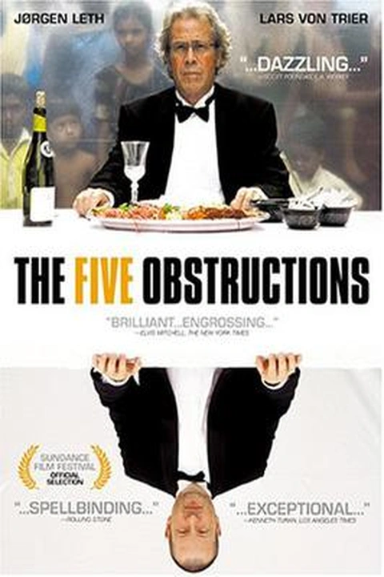
导演：Lars von Trier / Jørgen LethDirector: Lars von Trier / Jørgen Leth
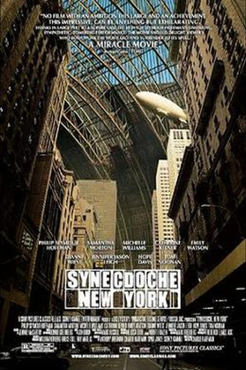
导演：Charlie KaufmanDirector: Charlie Kaufman
摄影：Fred ElmesCinematography: Fred Elmes
导演：Ned BensonDirector: Ned Benson
摄影：Christopher BlauveltCinematography: Christopher Blauvelt
导演：Ned BensonDirector: Ned Benson
摄影：Christopher BlauveltCinematography: Christopher Blauvelt
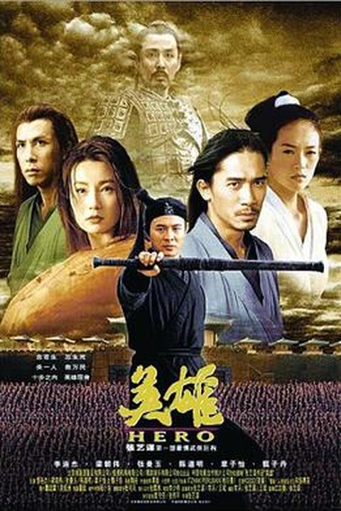
导演：Zhang YimouDirector: Zhang Yimou
摄影：Christopher DoyleCinematography: Christopher Doyle
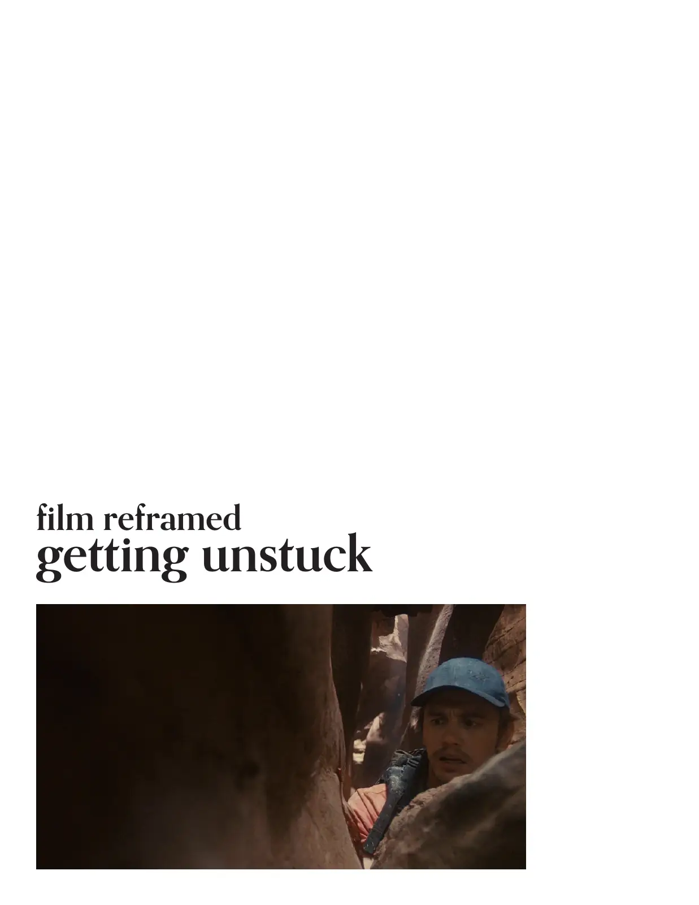
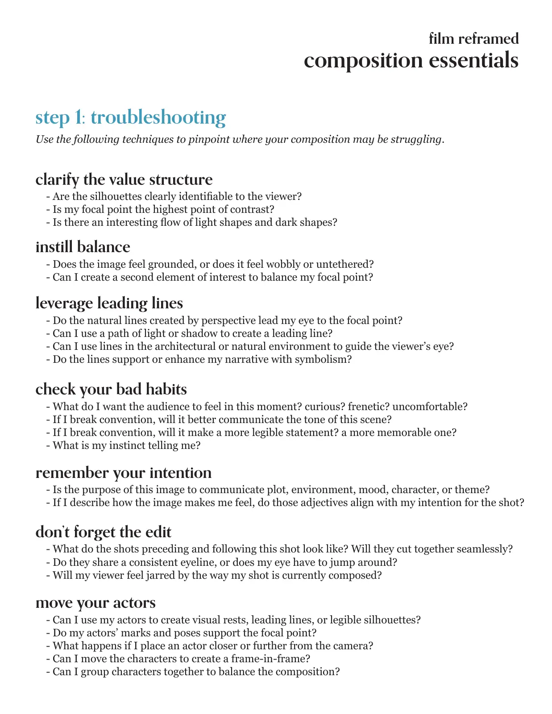
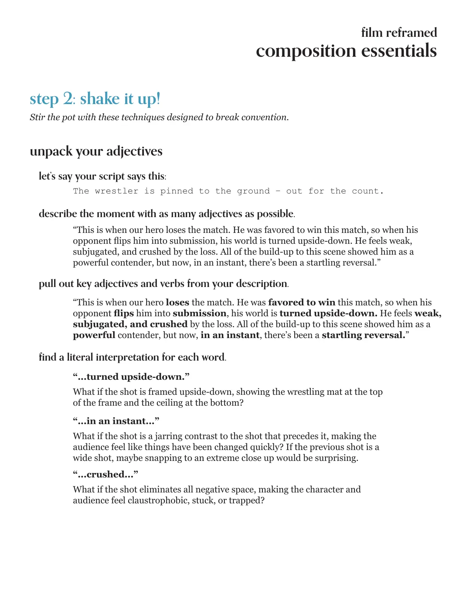
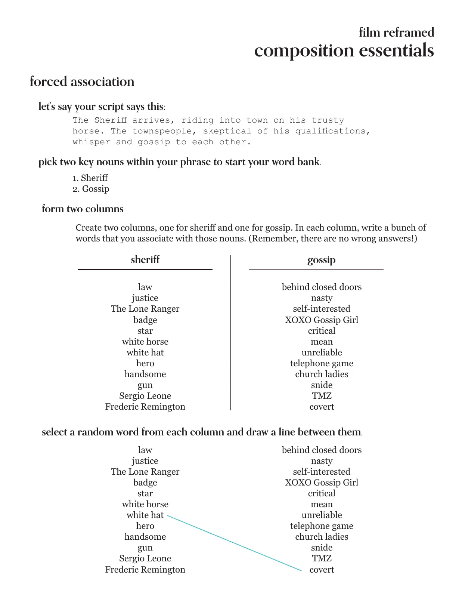
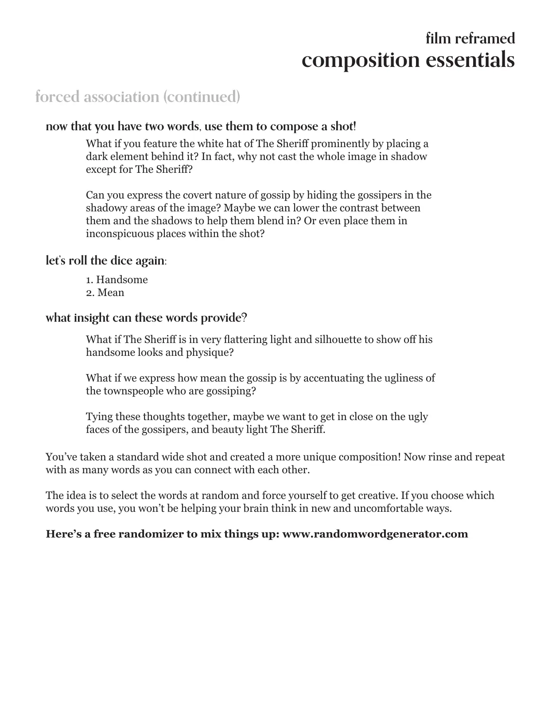
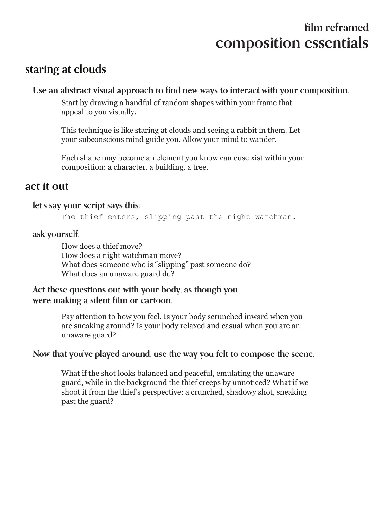
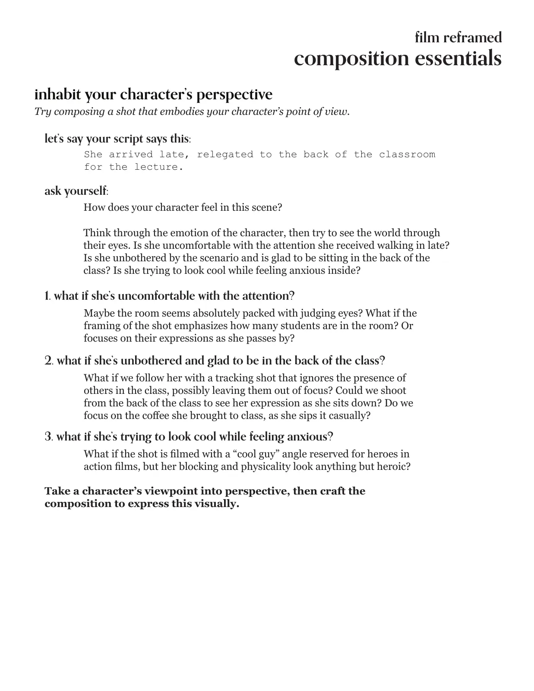
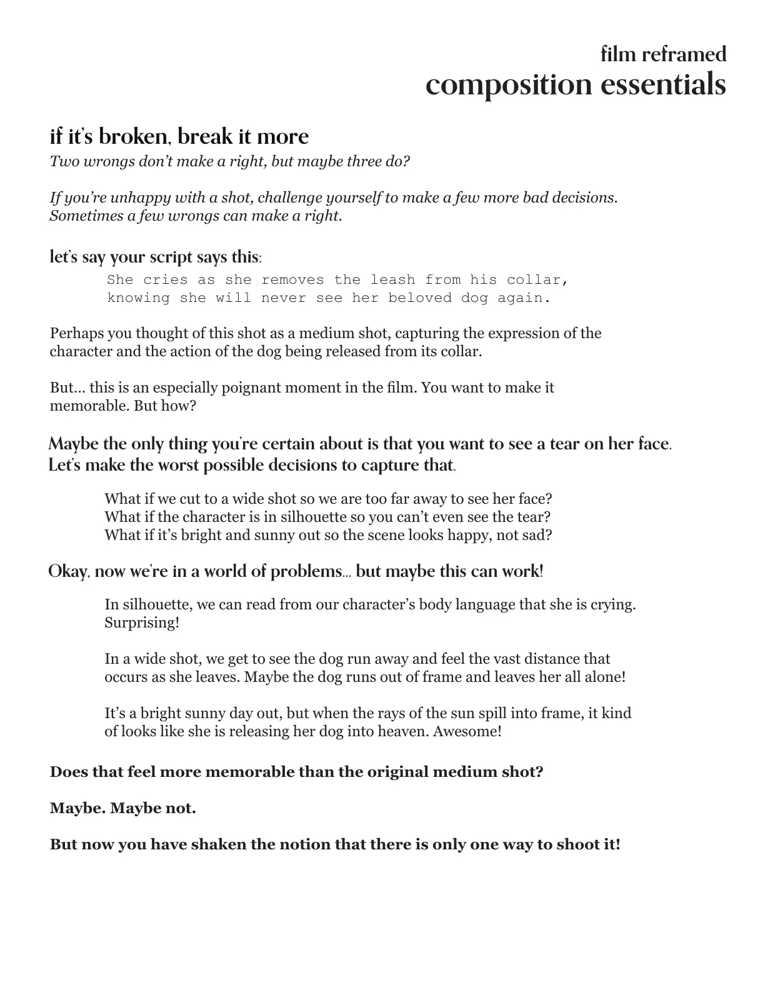
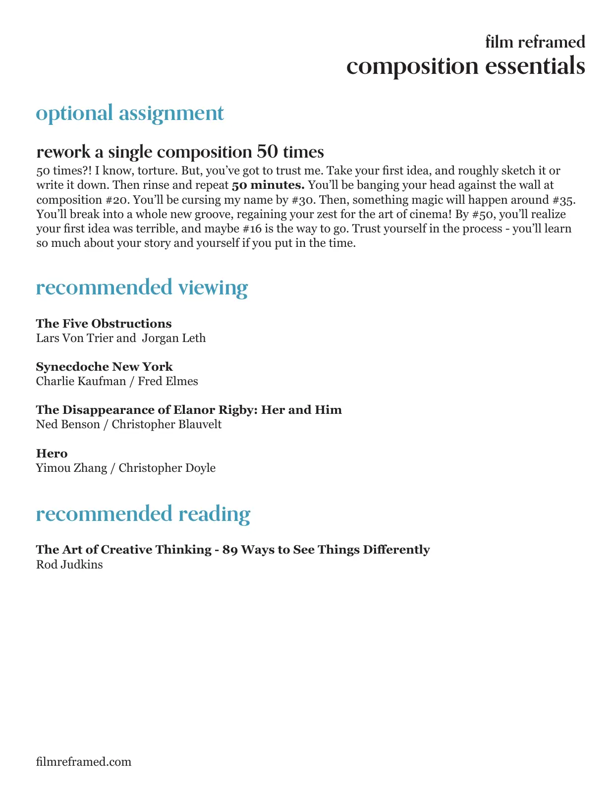